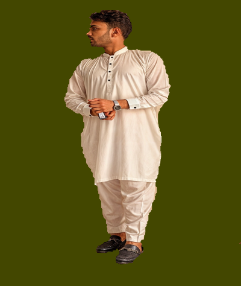

Welcome to Shahryar Qasim's Portfolio! I'm a dedicated professional specializing in IT and Development. With a passion for creativity and innovation, I bring expertise in Graphic Design,Web Development (Basic MERN Stack) and Mobile Application development Explore my work to see how I blend creativity, strategy, and technical skill into impactful projects. Let's collaborate and create something remarkable together!
Read MoreIn my early years, I attended Anmol Public School from nursery to 3rd grade, then moved to Shadman School Gujrat for grades 4 to 8. These schools laid the foundation for my love of learning and taught me valuable life skills. From Anmol, I cherish memories of my neighborhood community, while Shadman provided a nurturing environment for deeper academic exploration. Both experiences instilled in me values of discipline and perseverance that continue to guide me.
For my matriculation, I attended the prestigious Govt. Comprehensive High School Gujrat, the largest school in the district. Achieving a remarkable 92% in my matric exams, I proudly secured the second position among nearly 300 students. This success wasn't just about grades; it reflected my dedication to academic excellence and perseverance in the face of challenges. Govt. Comprehensive High School provided me with a robust educational foundation and a supportive environment that encouraged me to strive for greatness. My achievements in matriculation not only validated my hard work but also fueled my aspirations for future academic endeavors.
Navigating through the challenges posed by the COVID-19 pandemic, I successfully completed my FSc Pre Engineering from Punjab College Gujrat, achieving an outstanding 95%. Despite the disruptions and uncertainties, I remained focused on my studies, demonstrating resilience and adaptability. Punjab College provided a conducive environment for learning, offering innovative solutions to ensure continuity in education during such unprecedented times. My academic accomplishments during this period not only reflect my diligence and determination but also underscore my ability to thrive in adverse circumstances.
Embarking on my journey in higher education, I made the pivotal decision to pursue a Bachelor of Science in Information Technology (BS IT). Initially, it was a challenging choice, but as I delved deeper into the field, I discovered a genuine passion for it. Despite the initial hurdles, I persevered, driven by a growing interest and curiosity in the world of IT. Choosing BS IT was a challenging yet rewarding decision. With a CGPA of 3.62 by 8th semester, I've found my stride in the ever-evolving world of Information Technology, eager to make my mark and drive innovation. Though the journey had its share of challenges, my experience in pursuing BS IT has been rewarding, shaping not only my academic and professional skills but also my personal growth and aspirations for the future. I look forward to continuing my exploration and making meaningful contributions in the dynamic field of Information Technology.
In addition to my academic pursuits, I'm actively enhancing my skill set by undertaking a course in video editing and animations. This initiative reflects my commitment to continuous learning and personal development, as I strive to broaden my horizons beyond traditional education. By honing these creative skills alongside my studies, I aim to diversify my expertise and prepare myself for the dynamic demands of the modern professional landscape.
I'm dedicated to expanding my expertise in web development, currently enrolled in the Sigma Web Development Course by Code With Harry. This endeavor underscores my proactive approach to learning and my eagerness to stay abreast of industry trends. Through this course, I'm acquiring valuable insights and practical skills that will empower me to excel in this ever-evolving field. With each lesson, I am one step closer to mastering the art of web development and realizing my professional aspirations in the digital realm.
During my semester break, I dedicated my time to expanding my programming skills by delving into Python through courses offered by 'Apna College'. This proactive approach to learning reflects my commitment to continuous improvement and readiness to embrace new challenges. By investing in my programming knowledge, I aim to enhance my problem-solving abilities and broaden my career prospects in the ever-evolving tech industry.
In my early semesters, I laid the foundation of my programming skills by mastering the basics of C++ and C. Building upon this knowledge, I expanded my repertoire in my last semester, immersing myself in the realms of C# and .NET Framework. This journey reflects my continuous pursuit of proficiency in diverse programming languages, equipping me with a versatile skill set to tackle a variety of projects and challenges in the ever-evolving tech landscape.
Passionate Flutter developer adept at building performant and visually appealing cross-platform mobile applications. I bring a strong understanding of the Flutter framework and a commitment to clean, maintainable code.
Proficient in analyzing fMRI data using MATLAB, leveraging the power of SPM for preprocessing and statistical modeling, and MarsBaR for in-depth Region of Interest (ROI) analysis to extract and interpret neuroimaging findings.
I possess a comprehensive understanding of Microsoft Word and PowerPoint, honed through extensive usage and exploration. This proficiency allows me to effectively communicate ideas, craft engaging presentations, and showcase information with clarity and precision. With these skills at my disposal, I am adept at creating impactful documents and presentations that resonate with audiences and convey messages effectively.
I possess a strong command of Canva, Adobe Photoshop and Adobe Illustrator, leveraging its versatile tools to create visually appealing and professional front pages for my assignments. Recognizing the importance of making a lasting impression, I prioritize crafting aesthetically pleasing designs that captivate attention. Beyond academic projects, I've extended my creativity to design virtual wedding and birthday cards for friends, infusing personal touches and creativity to commemorate special occasions with Canva's intuitive platform.